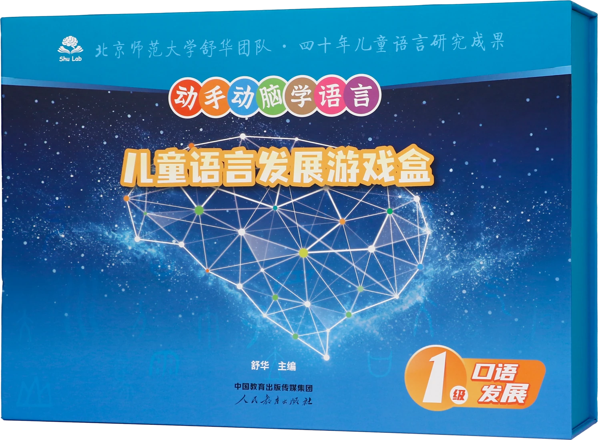
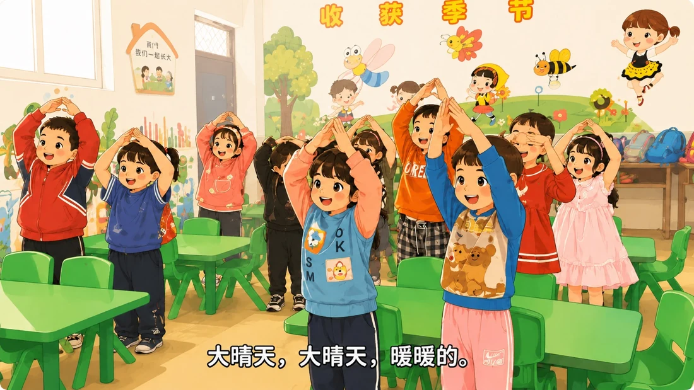

五大模块
从“听懂”到“读懂”，
一条完整的成长线
玩、看、练、认、读，五个模块各自解决一个关键问题，合起来是一套完整的听说读写思方案。
01
玩中学
以儿童心理发展规律为基础，遵循汉语语言和阅读发展规律，用寓教于乐、动手动脑的游戏形式。
看看游戏盒
每一级，都配一盒真实教具
- 1–4 级，逐级进阶
- 口语发展与读写发展，两条线并进
- 边玩边说，在操作中积累经验
能力成长图
点选阶段，看看这一级重点练什么。
02
看听做
把概念“看”会、“听”懂、“做”出来：主题微课系统讲解，儿歌律动巩固表达。
看看课程
敬请期待
主题微课以视频课程形式，系统讲解核心知识与关键概念。
律动视频以儿歌律动形式，帮助儿童巩固拓展概念、积极表达。
03
互动练
依托 AI 智能学伴，按孩子的实际水平出题与反馈，实现个性化因材施教。
进入语思智伴每一次练习，AI 学伴都会根据孩子的表现调整难度，把“练什么、练多少”交给数据，把陪伴留给家长。

04
知字理
把汉字字理，变成老师能用、孩子能懂的教学方法，举一反三学汉字。
看看汉字的故事从一幅画开始，看见汉字的来路：日是太阳，月是月亮，合在一起就是明亮。

日＋月
明
05
学阅读
根据孩子的阅读能力匹配难度适宜的分级绘本，提升阅读能力。
选一本书


语言是心智启蒙的起点，阅读是人生发展的基石。我们愿用积淀四十年的教育理念与科研成果，打造一套听说读写思的整体解决方案，助力每一个孩子的健康成长与无限未来。
舒华 教授北京师范大学心理学部